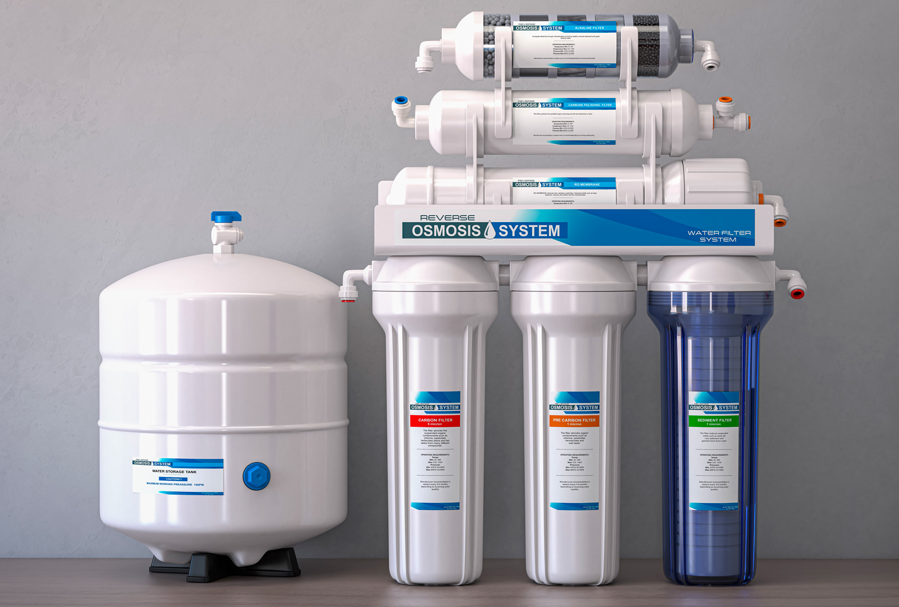

PROTEGE LA SALUD DE TU
FAMILIA DESDE EL AGUA.

FAMILIA DESDE EL AGUA.
Especialistas en purificación de agua. Analizamos tu agua y y te recomendamos la solución ideal para tu hogar segun tu necesidad. Tecnología avanzada, instalación profesional y sistemas respaldados con garantía, diseñados para brindarte agua limpia en cada punto de tu hogar a largo plazo.